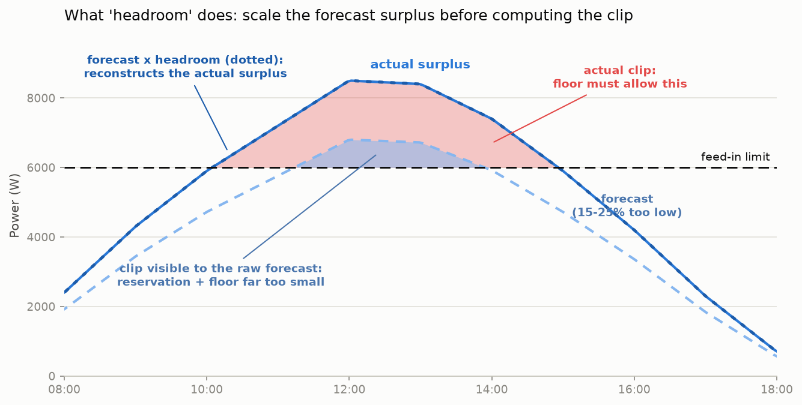

Evaluation: Solar feed-in limit (Solarspitzengesetz) in peak shaving¶
Status: implemented — the rule described here ships as src/batcontrol/logic/solar_limit.py
plus _apply_solar_limit() in src/batcontrol/logic/next.py. This page documents the
evaluation that preceded the implementation; its numbers are reproduced by the test suite.
Simulation script: scripts/simulate_solar_limit_day.py,
figures generated by scripts/plot_solar_limit_day.py.
Background: the 60% rule¶
The German "Solarspitzengesetz" (in force since 2025-02-25) limits uncontrolled PV plants (no iMSys + control box) to feeding at most 60% of their installed power into the grid at the grid connection point (Sec. 9 (2) no. 3 EEG). The inverter enforces the limit hard: production above it is curtailed and lost, unless it is self-consumed or charged into the battery.
For a 10 kWp plant this means at most 6,000 W of feed-in. On a clear summer day peaking at ~8.9 kW, several hours sit above the limit; without countermeasures about 7.5 kWh are lost on such a day (see the reference scenario below).

Important: this is a power limit, not an energy limit. The losses concentrate on the midday peak — exactly the window in which a naively charged battery has long been full.
Terminology¶
| Term | Meaning |
|---|---|
| clip | The part of the PV surplus above the feed-in limit — the energy the inverter curtails (loses) unless the battery absorbs it. Red area in the figures. |
| cap | An upper limit on the PV-to-battery charge rate (limit_battery_charge_rate in W). Today's peak-shaving rules emit caps to delay charging. -1 = no cap, 0 = block charging. |
| floor | A lower bound on the allowed charge rate during clip slots: the battery must be permitted to charge at least the power above the feed-in limit. With a greedy-charging inverter a floor never forces charging — it only raises the applied cap, and the inverter charges min(actual surplus, cap). |
| reservation | Free battery capacity held back before the clip window so it is still available when clipping starts. Implemented as a cap (case A below). |
| headroom | A safety factor >= 1.0 multiplied onto the forecast surplus before computing the clip. Solar forecasts systematically underestimate peaks; headroom reconstructs the higher real curve so reservation and floor are sized correctly. |
Key finding: today's peak shaving can cause curtailment¶
The existing peak-shaving rules (time/price) emit a cap on the PV charge
rate. When the PV surplus exceeds the feed-in limit, that cap blocks exactly the
energy that should go into the battery — the difference is curtailed. In the
reference scenario, plain time-based shaving curtails 1.8 kWh that the new rule
recovers completely.
Conversely, time-based shaving already helps partially (76% recovery vs. 0% baseline) because it shifts capacity into the afternoon — but uncoordinated and without any guarantee.
Proposed algorithm: the "solar_cap" rule¶
The rule works on the existing forecast arrays (Wh per interval, index 0 = now) and
distinguishes two cases. Per slot k (up to the end of the production window):
surplus_wh[k] = max(0, production[k] - consumption[k])
surplus_hr_wh[k] = surplus_wh[k] * headroom # headroom acts on the surplus
feed_allow_wh[k] = feed_in_limit_w * slot_h[k]
clip_wh[k] = max(0, surplus_hr_wh[k] - feed_allow_wh[k])
The "everything fits, no cap needed" check in case B compares the raw (not headroom-adjusted) total surplus against the free capacity — it is a physical check, not a safety margin.
Case A — before the clip window: reservation cap. Free capacity minus the predicted clip energy is spread evenly over the slots until the window starts. If the required reserve exceeds the free capacity, PV charging is blocked entirely (cap 0). This prevents exportable energy from displacing clip energy in the battery 1:1.
Case B — inside the clip window: floor + capacity-preserving cap.
floor_w = clip_wh[0] / slot_h[0]
cap_w = -1 if total surplus <= free capacity
= floor_w + extra_wh / remaining_h otherwise (extra = free cap. - remaining clip)
Under scarcity (extra = 0) the cap equals the floor: the battery absorbs only
clip energy; everything below the limit is fed into the grid. No prioritization
inside the window is needed — every absorbed clip Wh has equal value; the only
harmful move is filling capacity with exportable energy.

Configuration design: one switch per rule¶
With three rule flavors (target time, price, solar) the previous mode string
(time/price/combined) becomes confusing. Agreed design: one explicit switch
per rule; mode is deprecated and mapped onto the switches at load time
(time -> time_active, price -> price_active, combined -> both):
peak_shaving:
enabled: false # master switch (as today, incl. evcc override)
time_active: true # target-time rule (counter-linear ramp)
price_active: false # price rule (reserve for cheap windows)
solar_cap_active: false # NEW: clip absorption (feed-in limit)
allow_full_battery_after: 14 # parameter of the target-time rule
price_limit: 0.05 # parameter of the price rule
feed_in_limit_w: 0 # parameter of the solar rule: feed-in limit in W.
# 0 = neutral (rule has no effect even if
# solar_cap_active is true). Formula: 0.6 * kWp * 1000
feed_in_limit_headroom: 1.0 # safety factor >= 1.0 on the forecast surplus
# (see terminology and scenario 4b)
feed_in_limit_w is deliberately an absolute watt value: the installed power
(kWp) exists in the config only for fcsolar pvinstallations (not at all for
Solcast), and the limit applies at the grid connection point of the whole plant.
0 is the neutral value — in addition to the switch, so an unconfigured limit can
never be misread as "0 W of feed-in allowed".
Relation to production_offset_percent¶
battery_control_expert.production_offset_percent also scales the production
forecast, so the overlap was evaluated. Measured inside the solar rule the two
knobs are indeed equivalent — same effect, same trade-off:
| Setting (rule view) | Recovery at +25% error | Recovery with correct forecast |
|---|---|---|
production_offset_percent: 1.25 |
100.0% | 58.7% |
feed_in_limit_headroom: 1.25 |
94.7% | 62.7% |
They differ in scope, which is why the rule gets its own key:
production_offset_percentis applied globally incore.pybefore the forecast enters the logic. A value > 1 distorts every downstream decision: less grid recharge is planned, discharge decisions become more generous, time/price caps engage too early. Its documented purpose is the opposite direction (winter mode0.7, snow, degradation).feed_in_limit_headroomaffects only the solar rule's reservation and floor. The clipping-relevant forecast error is a shape error (underestimated midday peak on clear days), not a whole-day energy error.
Do not use production_offset_percent (> 1) to tune clip absorption. The two
compose cleanly instead: the solar rule consumes the already offset-adjusted
production array, so a winter user at 0.7 automatically gets a conservative
(smaller) clip prediction — harmless, since nothing clips in winter.
Priorities between the rule flavors¶
Documented, fixed order of precedence (no configuration needed):
enabled(master) off -> no rule acts (incl. the evcc runtime override).- Force-charge from grid (MODE -1) overrides all peak shaving (as today).
- All active cap rules (target-time ramp, price reserve, solar reservation)
each emit a limit; the strictest wins (
min, like today'scombined). - The solar floor overrides every cap:
final = max(floor, min(caps)). Rationale: caps optimize economics (shift charging), the floor prevents physical loss (curtailment). A cap below the floor would destroy energy. The floor therefore also applies afterallow_full_battery_afterand at high SoC (always_allow_dischargeregion) — the clip window physically lasts longer than the target hour. Consequence: the solar reservation may let the battery reach 100% only after the target hour; lost energy weighs more than a late-full battery. - Static inverter clamps last (
max_pv_charge_rateas upper bound, 500 W minimum viaenforce_min_pv_charge_rate). Caution: a configuredmax_pv_charge_ratebelow the floor makes curtailment physically unavoidable -> startup warning planned.
Sentinel semantics stay unchanged: -1 = no limit, 0 = block charging. -1
automatically satisfies every floor because the inverter then charges surplus
greedily anyway — no new inverter mode is needed; the floor is the guarantee
applied cap >= floor.
Simulation results¶
All numbers from scripts/simulate_solar_limit_day.py (reference: 10 kWp south,
clear summer day, 8.9 kW peak, 6,000 W limit, 10 kWh battery, 400 W base load,
starting SoC 15%, hourly resolution). "Recovery" = share of the energy curtailed
without a battery that is saved.
Scenario 1 — reference day¶
| Trace | Feed-in | Curtailed | Recovery |
|---|---|---|---|
| Baseline (all rules off) | 40.50 kWh | 7.50 kWh | 0% |
Only time_active (today) |
46.20 kWh | 1.80 kWh | 76.0% |
Only solar_cap_active |
48.00 kWh | 0.00 kWh | 100% |
time_active + solar_cap_active |
48.00 kWh | 0.00 kWh | 100% |
The end-of-day SoC is identical in all traces (83.3%) — the rule gives nothing away, it only changes what the battery is filled with. Visible in the slot detail: before the window the reservation cap limits charging to 625 W; from 11:00 the floor lifts the charge rate to exactly the clip power (1,200 -> 2,500 -> 2,400 -> 1,400 W) while feed-in stays pinned at 6,000 W. In the combined trace the floor overrides the time-ramp cap exactly when that cap would cause curtailment.
Scenario 2 — east-west profile (5.6 kW peak < limit)¶
No clipping expected; the rule stays completely inert — trace bit-identical to the baseline (regression check passed, no false positives).
Scenario 3 — small battery (5 kWh, scarcity)¶
Free capacity at window start 5.00 kWh, clip potential 7.50 kWh:
| Trace | Curtailed | Recovery |
|---|---|---|
| Baseline | 7.50 kWh | 0% |
Only solar_cap_active |
2.50 kWh | 66.7% |
Recovered: 5.00 kWh = exactly the free capacity at window start — the
theoretical maximum. The reservation blocks all morning PV charging (cap 0, feed-in
continues below the limit), inside the window cap == floor holds.
Scenario 4 — forecast error (forecast = 85% of actual)¶
| Trace | Curtailed | Recovery |
|---|---|---|
| Baseline | 7.50 kWh | 0% |
| solar, headroom 1.0 | 4.96 kWh | 33.8% |
| solar, headroom 1.2 | 4.46 kWh | 40.6% |
| solar, headroom 1.5 | 4.23 kWh | 43.5% |
| solar, perfect forecast | 0.00 kWh | 100% |
Findings: (a) the algorithm is clearly forecast-sensitive — a 15% underestimation of production underestimates the clip disproportionately (the clip is the "tip" of the curve). (b) Headroom applied to the clip energy improves the reservation only moderately (+7 points at 1.2), because inside the window the floor is also computed from the too-low forecast. The mitigation plan derived from this is developed and quantified in scenario 4b.
Scenario 4b — severe forecast error (actual = 125% of forecast)¶
The forecast sees only 1.36 kWh of clip potential instead of the real 7.50 kWh and does not recognize entire clip slots (11:00, 14:00) as such at all — a multiplier on the predicted clip energy structurally cannot repair that. Since batcontrol has no live measurement of the current production, only forecast-based mitigations are available; two were implemented and compared:
- Headroom on the surplus (
headroom_on='surplus'): the factor is applied to the forecast surplus before the clip computation. This reconstructs an underestimated production curve and also finds clip slots the raw forecast misses — it repairs the reservation before the window. - Headroom floor (
floor_source='headroom'): the floor inside the window is computed from the headroom-corrected instead of the raw clip. With greedy charging inverters the floor is only a permission anyway (the applied cap is raised, the inverter chargesmin(actual surplus, cap)) — charging that does not physically exist is never forced. It repairs the absorption inside the window.

Results under both conditions (actual = 125% of forecast vs. forecast correct):
| Setting | Recovery at +25% error | Recovery with correct forecast |
|---|---|---|
| headroom 1.25 on clip (raw floor) | 38.7% | — |
| headroom 1.25 on surplus (raw floor) | 31.8% | — |
| surplus 1.1 + headroom floor | 44.9% | 94.5% (loss 0.41 kWh) |
| surplus 1.25 + headroom floor | 94.7% | 62.7% (loss 2.80 kWh) |
| neutral (headroom 1.0) | 31.8-38.7% | 100% |
Key insights:
- Both measures are effective only together: without the headroom floor the perfect reservation is worthless (the forecast-based cap blocks charging while real clipping happens — which is why "surplus alone" is even slightly worse than "clip alone"); without the surplus headroom the battery is already pre-filled when the window starts.
- Without a live measurement the headroom is a genuine trade-off: its value must roughly match the typical forecast error. Too high a value (1.25 with a correct forecast) charges exportable energy inside the window and displaces clip energy 1:1 on capacity-scarce days (2.8 kWh loss). Too low a value leaves clip energy on the table.
- 1.1 is the robust compromise: it costs only 0.41 kWh with a correct forecast and already improves the error case noticeably.
Forecast-error plan (settled for the integration, forecast-only):
feed_in_limit_headroomacts on the forecast surplus and the floor is computed from the headroom-corrected clip (one shared knob, no second config key). Default1.0(neutral, lossless with a correct forecast); documented recommendation1.1, up to1.25for known-pessimistic forecast sources.- Document the side effects: headroom > 1 can trigger an unnecessary reservation on days just below the limit (battery full later, no energy loss) and can displace a small part of the clip on capacity-scarce clipping days with a correct forecast (quantified above).
- The 15-minute resolution (
time_resolution_minutes: 15) additionally reduces the systematic part of the error (scenario 6). - Future option (requires a new data path): a live measurement of the current production/feed-in would make the floor forecast-independent and dissolve the trade-off — batcontrol does not capture these values today.
Scenario 5 — midday consumption spike (2.4 kW, 12-14h)¶
Self-consumption lowers the clip potential to 3.50 kWh; the combination
time + solar_cap recovers 100% (baseline 0%, time-only 60%).
Scenario 6 — 15-minute resolution¶
Consistency check on the interpolated reference day: 99.1% recovery (residual loss of 0.07 kWh from interpolation edges at slot boundaries). The 15-minute resolution additionally reduces the systematic "hourly average understates instantaneous clipping" error.
Assessment¶
The algorithm meets the requirements:
- It saves the "40%": 100% recovery with a correct forecast, exactly the physical maximum with a scarce battery.
- It fixes a defect: without the floor, the existing peak shaving itself causes losses on clipping days (1.8 kWh on the reference day).
- It is minimally invasive: no new inverter mode, no new data source, same sentinel semantics, additive as a post-processing step.
- It is neutral when it has nothing to do (east-west scenario) and fully
disengageable via
feed_in_limit_w: 0orsolar_cap_active: false.
Known limits: forecast sensitivity (scenarios 4/4b) — without a live measurement of the current production (currently not part of batcontrol) the headroom remains a trade-off whose value must match the typical forecast error (recommendation 1.1); hourly average vs. instantaneous power (a slot averaging just below the limit can still clip briefly — partially covered by headroom).
Integration roadmap (follow-up step)¶
logic/logic_interface.py: extendPeakShavingConfigwithtime_active,price_active,solar_cap_active,feed_in_limit_w(default 0 = neutral) andfeed_in_limit_headroom(default 1.0); deprecatemodeand map it onto the switches infrom_config()(log a warning); validation analogous toprice_limit.- New
logic/solar_limit.py: takecompute_solar_limit()andmerge_limits()from the simulation script unchanged (pure functions, pattern:grid_charge_target.py). logic/next.py: own post-processing step_apply_solar_limit()after_apply_peak_shaving()with its own (smaller) skip list: also runs at high SoC and afterallow_full_battery_after; still skips on force-charge and onallow_discharge == False(there the inverter charges surplus unrestricted anyway). Merge according to the priority rule above;enforce_min_pv_charge_rateonce on the final merged value. Extract the helper_remaining_interval_hours()(partial slot 0, cf. the grid-recharge block).feed_in_limit_headroomacts on the forecast surplus and the floor uses the headroom-corrected clip (headroom_on='surplus',floor_source='headroom'in the simulation script; trade-off see scenario 4b).core.py: startup warning whenfeed_in_limit_w > 0andmax_pv_charge_rate > 0.- Tests:
tests/batcontrol/logic/test_solar_limit.py(pure functions) + integration cases intest_peak_shaving.py(floor overrides cap incl. cap 0, reservation, scarcitycap == floor, neutral value = bit-identical behavior, sentinels, partial slot 0, 15-min, mode deprecation mapping). config/batcontrol_config_dummy.yaml+docs/features/peak-shaving.md+ HA add-on mirroring (MaStr/batcontrol_ha_addon).- Open for the integration: live measurement as floor source for slot 0 (see
scenario 4b); active discharging before the window (deferred, passive
reservation only); MQTT topic
predicted_clip_wh(read-only, optional).